Qlib offline model/data workflow evidence
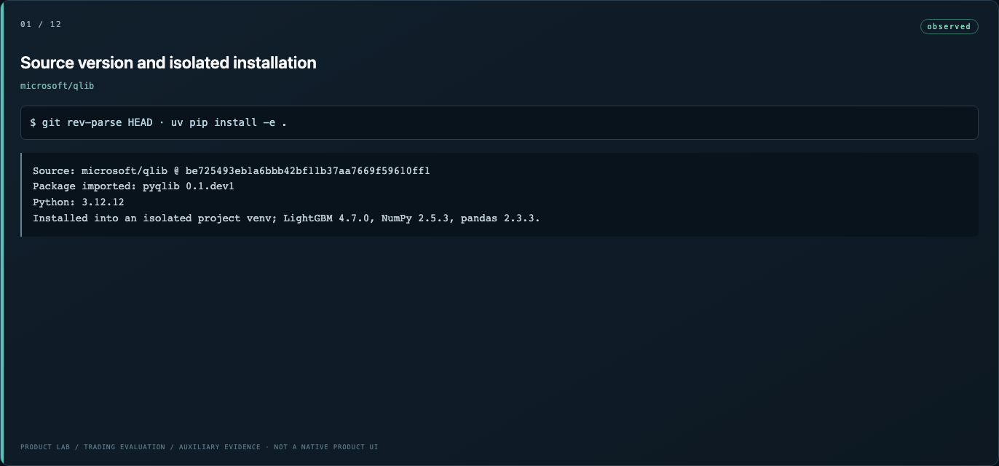
01-01-source-version-and-isolated-installation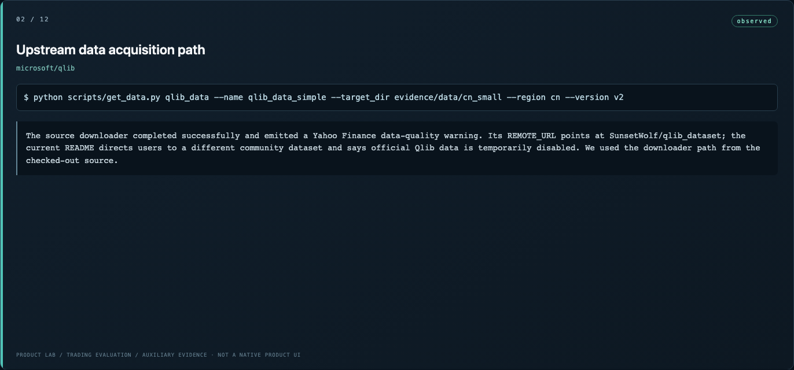
02-02-upstream-data-acquisition-path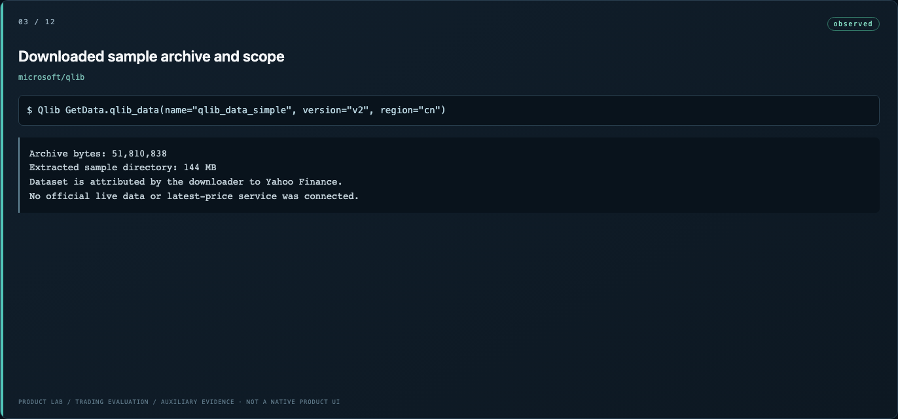
03-03-downloaded-sample-archive-and-scope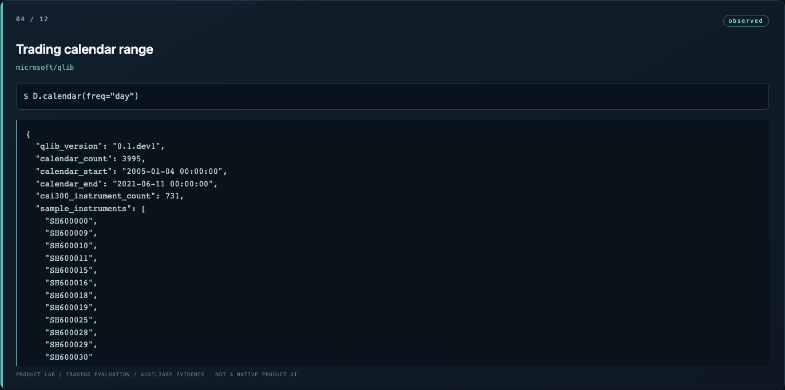
04-04-trading-calendar-range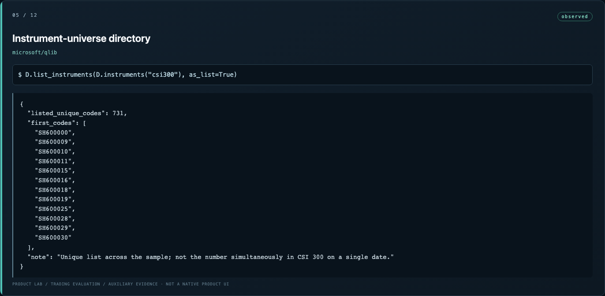
05-05-instrument-universe-directory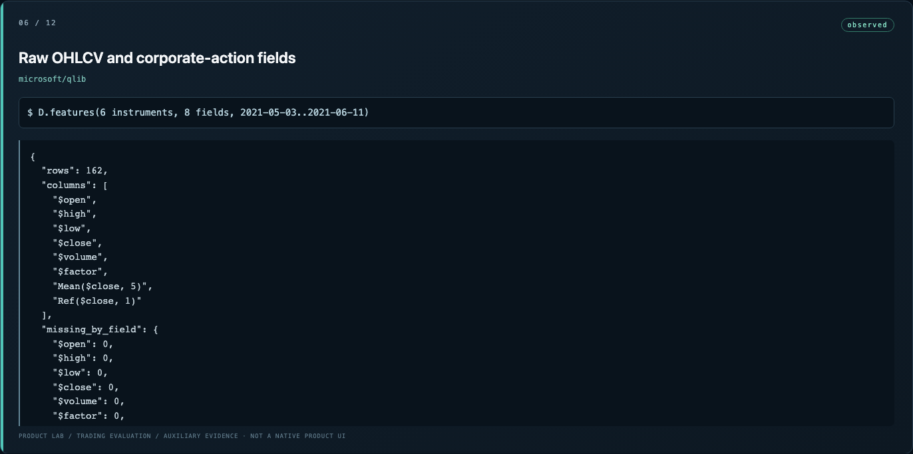
06-06-raw-ohlcv-and-corporate-action-fields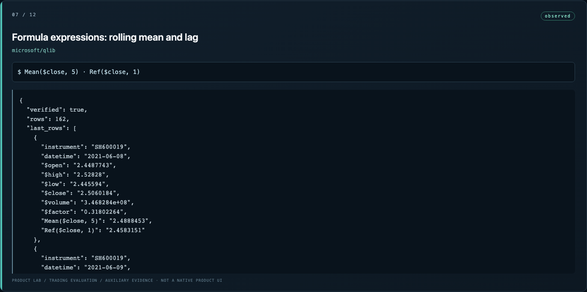
07-07-formula-expressions-rolling-mean-and-lag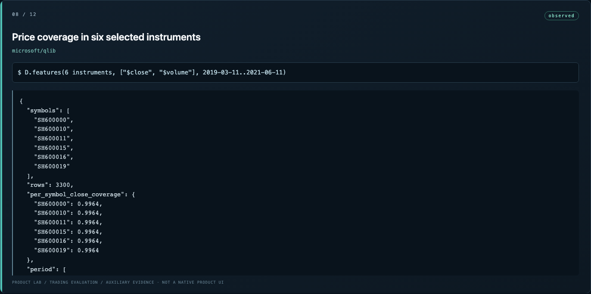
08-08-price-coverage-in-six-selected-instruments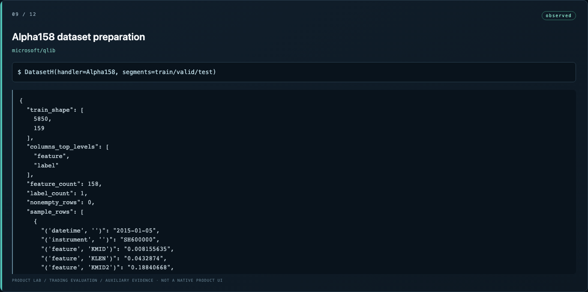
09-09-alpha158-dataset-preparation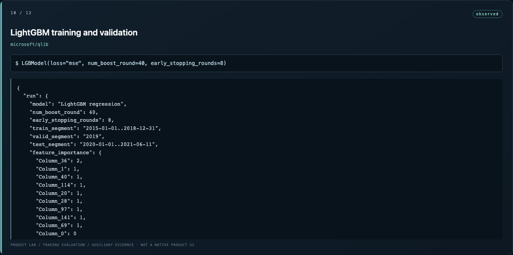
10-10-lightgbm-training-and-validation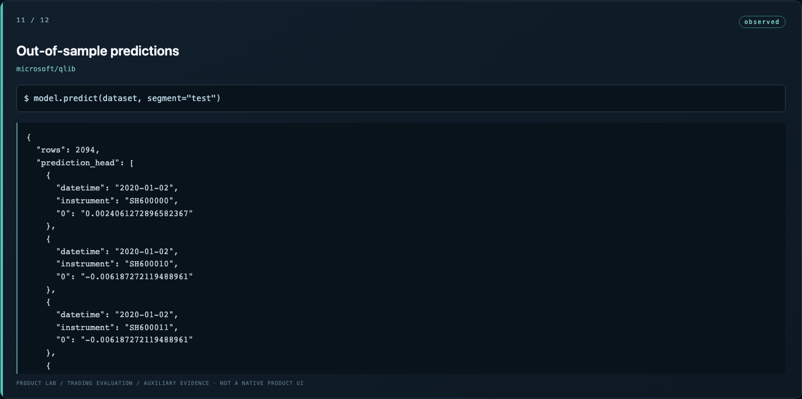
11-11-out-of-sample-predictions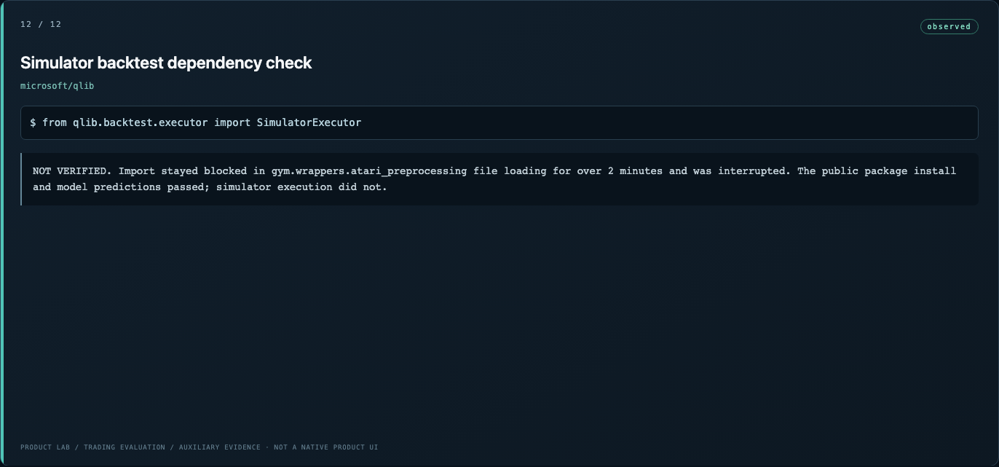
12-12-simulator-backtest-dependency-check